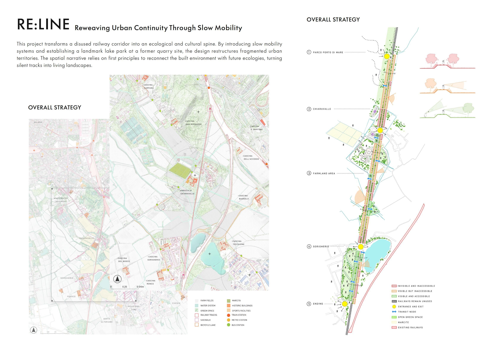
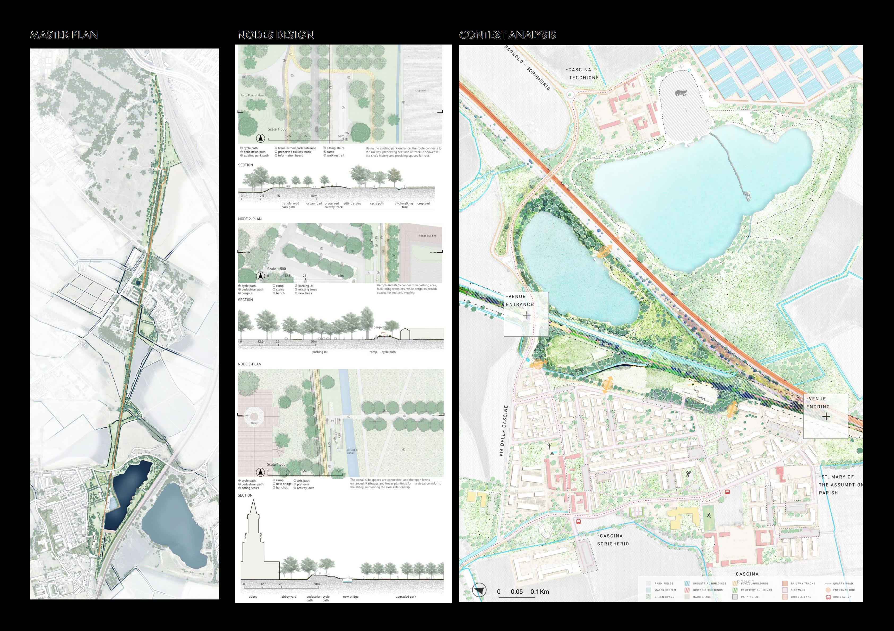
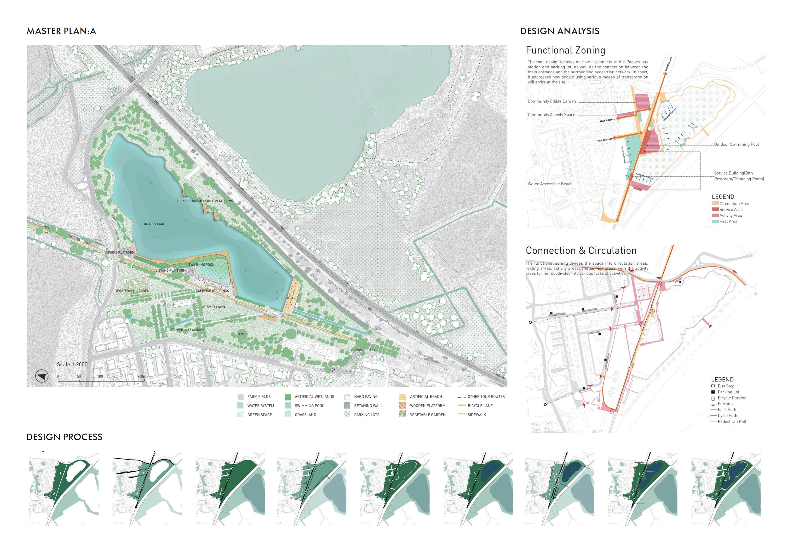
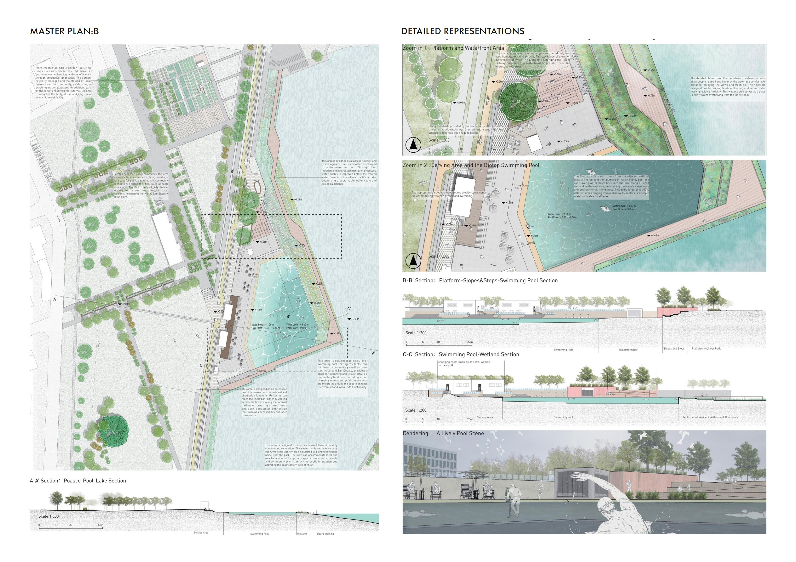
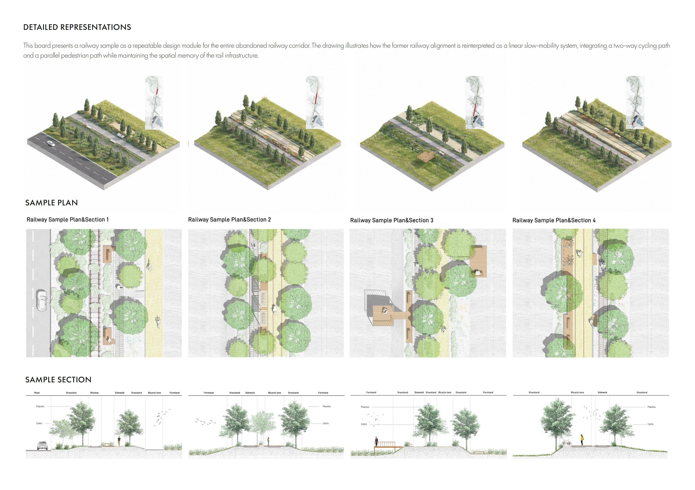

Southern Milan Metropolitan Area, Lombardy, Italy
Urban Regeneration / Slow Mobility Network / Ecological Corridor Design
Local Residents / Cyclists / Pedestrians / Nearby Communities / Recreational Visitors
Academic Project / Concept
RE:LINE transforms a disused railway corridor in southern Milan into an ecological and cultural spine. The project introduces a continuous slow-mobility network that reconnects fragmented neighbourhoods, farmland and open landscapes while preserving the spatial memory of the former railway. A revitalised quarry lake becomes a major recreational node, integrating water-accessible spaces, community gardens and wetland habitats. Along the wider corridor, repeatable landscape modules adapt to changing urban and rural conditions, turning obsolete infrastructure into a connected public landscape.




